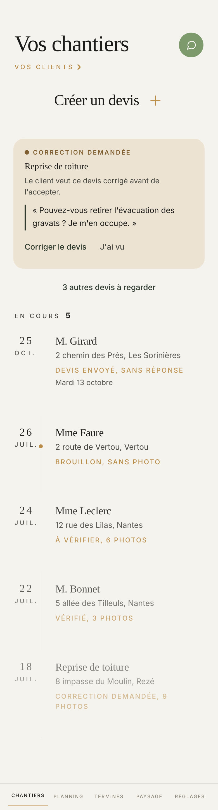

Proposé
Aujourd'hui

Ce qui change
- La réponse d'un client tient en moins de place : ce qu'il a fait, le chantier, ses mots à lui, deux gestes. La phrase qui redisait le titre part, le trait noir devant la citation aussi. Une phrase qui porte une date reste.
- 3 autres devis à regarder s'ouvre sur place, et se replie.
- Chaque chantier se lit en entier : le nom, l'adresse, l'état en or dans une phrase au lieu de capitales espacées de 11 px, la date plus grande.
- Les lignes sont plus serrées : un matin où un client a répondu, le premier chantier entre dans l'écran.
- Vos clients se lit : 15 px en or, avec son chevron, à la même place.
- Les chantiers loin du milieu ne pâlissent plus. La perle d'or dit déjà lequel on regarde.
- La barre du bas en mots de 12,5 px.
Ce qui reste comme dans l'appli
- Vos chantiers en grand avec 44 px d'air au-dessus, l'assistant à côté. Ni Bonjour, ni ATLAS, ni trait gris.
- Créer un devis en lettres de titre, son signe d'or qui se trace, et ses grains qui partent à l'appui.
- Le fil, la date à gauche, aucune boîte autour d'un chantier, la perle à mi-hauteur.
- L'encadré des réponses et ses coins arrondis, comme aujourd'hui.
- L'état toujours en or, et la date seule sous Devis envoyé.
- Adresse non renseignée en rouge mène à la fiche ; glisser une ligne vers la gauche la retire, et le tiroir rend la main.
- En cours et son chiffre, une seule fois. Au début, Créer un devis au tiers haut, sans phrase.
À trancher
- Le chantier du milieu net et les autres à moitié effacés, c'était votre fil du 10 août. Au soleil, une adresse grise à moitié effacée ne se lit plus, d'où la proposition de tout laisser net. Si vous tenez à l'effet, il revient, plus léger.